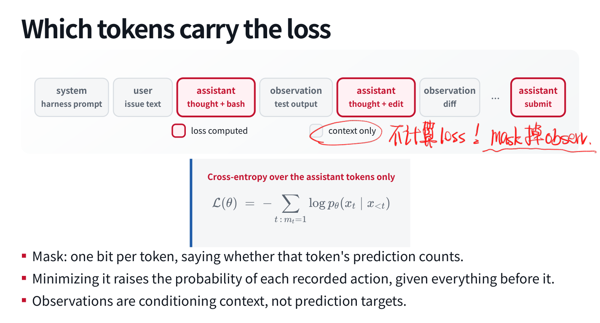
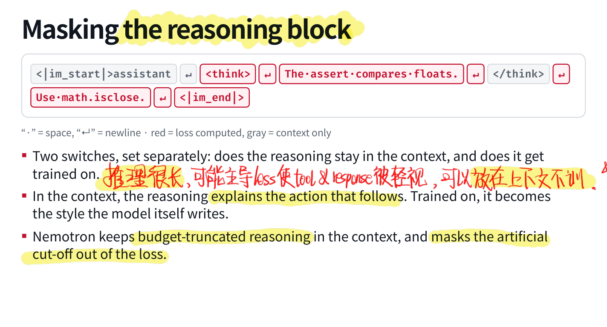
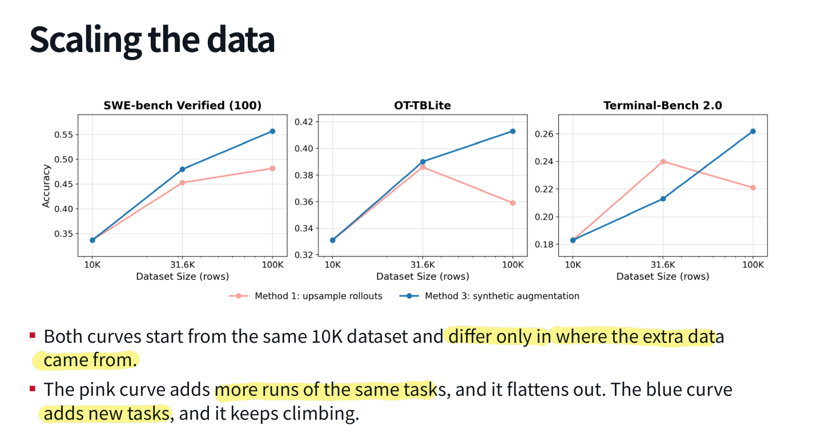
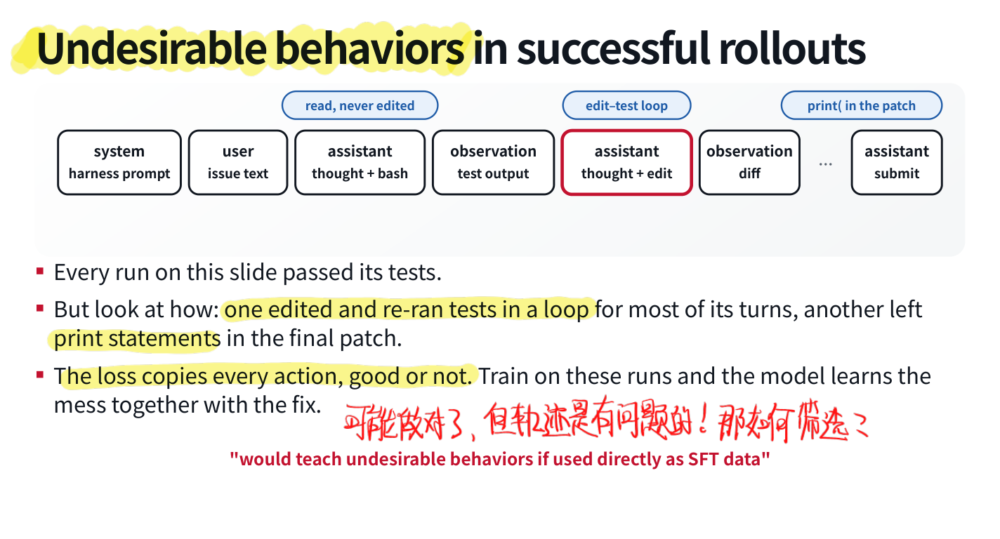
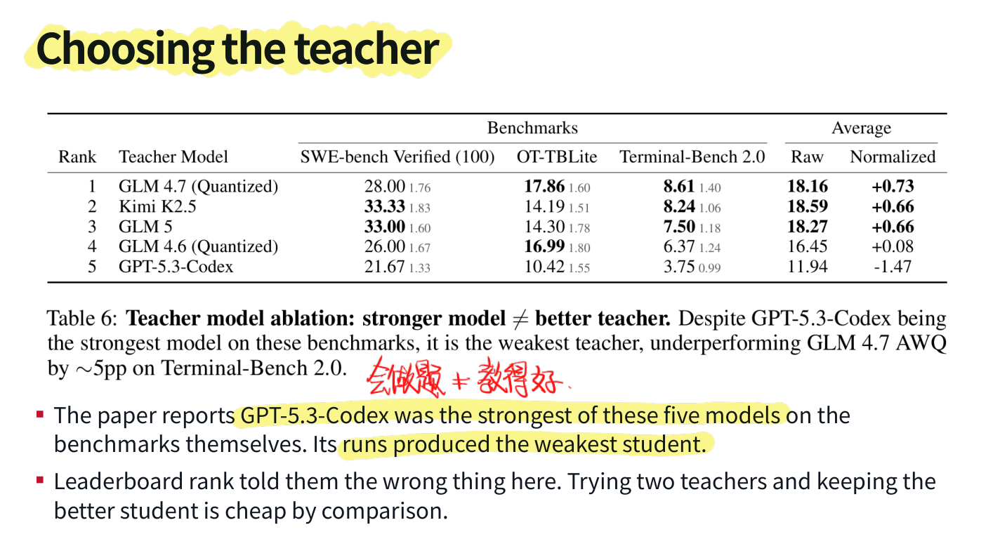
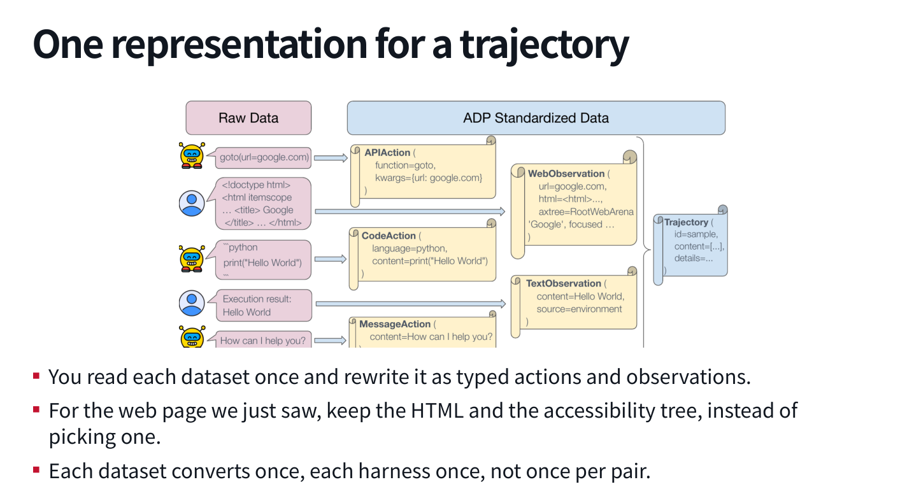
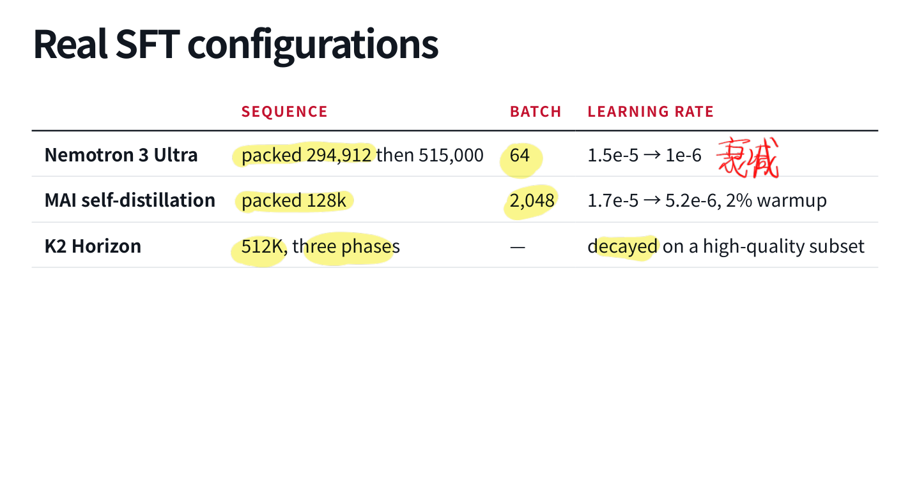
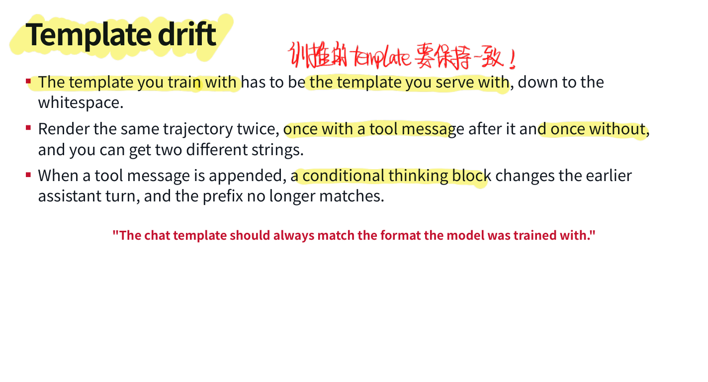
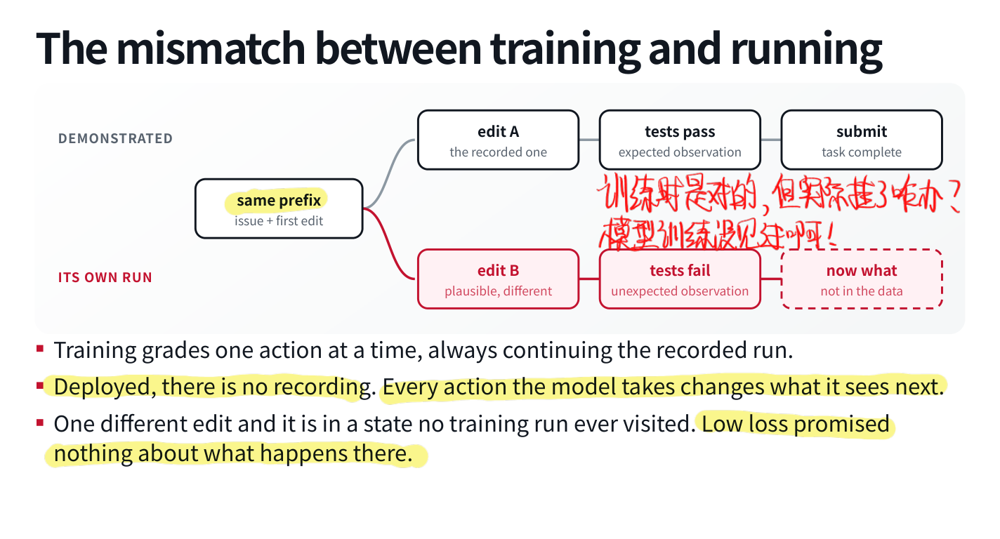

前面几讲都在改模型周围的东西：工具、上下文、记忆、计划。现在终于轮到更新参数了。SFT 的目标函数并不新，但 Agent 数据比普通「问题—答案」多了很多边界：谁说的话、哪些是工具返回、哪些 token 该学、动作采用哪套协议，全会影响模型最终学到什么。
因此这讲最值得花时间的，反而是数据如何变成模型实际看到的训练序列。只准备好一个 conversations JSON，然后把配置里的 epochs 改大，大概很难称得上做好了 Agent SFT）
7.1 把轨迹写进权重
一条典型 Coding Agent 轨迹是：system 指令 → user issue → assistant 推理与命令 → observation 测试结果 → assistant 修改 → observation diff / 日志 → 最后提交。环境测试决定这次任务是否成功，轨迹记录了它怎么走到结果。
SFT 会让模型更熟悉工具调用格式、长对话中的持续执行、观察长什么样，以及何时等待工具结果。它也会学到示范里的冗余评论、重复命令和特定解法习惯。交叉熵不会自动判断哪些动作只是教师顺手瞎折腾。
相较于外部记忆，参数更新影响每次后续调用，不必反复读相同指导；但它更新慢、难检查，也不能直接把一套权重里的经验搬到另一个模型。训练 pipeline 中，预训练、中训练、SFT 往往依次提高数据筛选程度；例如不同项目出现过 20T 预训练、1.43T mid-training、332B SFT 这样的规模。这些数来自不同模型，不能拼成同一个模型的完整预算，只是说明 SFT 在大规模训练中也未必很小。
7.2 SFT 与 RL 各自做什么？
SFT 学记录好的动作，教师可以是别人，也可以是自己；RL 则让当前策略生成 rollout，再依据奖励更新。SFT 在选定 token 上有直接预测目标，RL 的基础设定往往只有一个轨迹级分数，需要从结果反推动作策略。
前者需要优质数据与训练算力，后者还需要能运行的环境、沙盒与可检查奖励。SFT 擅长建立格式、工具使用与基本任务能力；RL 可以进一步优化模型已经能尝试的行为。示范错误或覆盖窄会限制 SFT，起点太弱或 reward 不可靠也会限制 RL。
Cold start 是 RL 起始 checkpoint。DeepSeek-R1-Zero 说明直接从 base 做 RL 并非逻辑上不可能，但 R1 又加入精选冷启动示例来改善可读性等问题。另一些路线先 SFT 建立 Agent 行为，再用 RL 发展不同领域 / 推理预算的 expert，最后通过 on-policy distillation 整合。不能简单记成「SFT 已经过时，RL 全秒了」，至少这讲的数据并不支持这么省事的结论。
7.3 轨迹怎样变成 Token 序列？
Chat template 把不同角色、推理块、工具调用和工具返回序列化。特殊边界 token 与普通文本都在输入里，角色本身不会以 Python dictionary 的形式跟着模型计算；数据处理阶段必须把这些结构转换正确。
例如工具返回「3 failed, 41 passed」，接着 assistant 决定检查浮点比较，再调用编辑器。工具输出是下一步决策的条件，不能让模型误以为自己应该继续编一段测试结果。
Assistant-only loss
常用设定只对 assistant 生成部分计算损失：
system、user、observation 通常作为 context，；需要模型生成的 assistant 内容，。不计算当前位置的 loss，不等于把该位置从上下文删掉，后面的动作预测仍能利用它。

构造 mask 时，一条路径是在模板渲染时记录 assistant 字符区间，再映射到 token 区间；也可以由编码器按角色处理。边界可能与分词对齐产生细节，所以最好直接打印 token、文本片段和 mask，逐段核查。常见实现还会把非监督位置的 label 设为 ignore index，由 loss 跳过。
不要漏掉停止与交接
推理时由系统提供的 assistant 起始前缀，和模型自己产生的结束标记，要分开处理。模型需要学会生成的 stop token 应进入监督范围。消息结束、把控制交给工具、整个任务完成，也未必使用同一个标记；XTML 等模板会显式区分这些事件。
如果动作文本学得很好，却没学会何时结束，部署时可能无限续写，或者把工具观察也自己接着写出来。检查 mask 不能只圈正文，把所有边界都忽略。
几套框架的配置
| 框架 | 常见控制项 | 需要确认的含义 |
|---|---|---|
| TRL | assistant_only_loss=True |
模板需能标出 assistant 生成区间，例如 generation markers |
| TRL | completion_only_loss |
prompt—completion 数据中的 completion 范围，与多角色 assistant mask 不完全相同 |
| Axolotl | roles_to_train、train_on_eos |
哪些角色参与训练，各训练轮结束标记是否监督 |
| LLaMA-Factory | train_on_prompt、mask_history |
prompt 是否参与、是否只训练最后一轮等 |
这里记的是配置的职责，不是见到参数名就默认语义完全相同。尤其「所有 assistant 轮都训练」与「只训练最后一轮」差很多；把某个框架的默认值带到另一个实现里，可能已经换了实验。
7.4 Reasoning：留在上下文和计算 Loss 是两件事
推理块有两个独立开关：保不保留，学不学习。保留但 mask，可以让后续动作参考这段推理，而不直接训练模型生成其中每个 token；参与 loss，则把推理内容与风格也作为目标。

我会担心长推理把短工具调用淹没：前面几千 token 的说明，后面只有几十 token 的关键参数，如果简单按 token 求平均，训练权重天然不一样。BalanceSFT 的 SSB 以学习权重重平衡推理与调用，HDR 则重采样困难样本；相关消融里多轮任务收益更明显。但它同时有多种组件，不能把整体提升全部归给单一 mask。
截断也得小心。预算截断的推理可以仍留作上下文，但人为截断位置不应该被错误地教成模型自然停止或正常格式。Nemotron 的一种处理就是保留相关推理条件，同时把人工 cutoff 的监督排除。
至于「推理是否全部 mask」「observation 能否也提供辅助预测目标」，我觉得值得做系统消融。单轮指令调优中 prompt supervision 的结果，不能直接平移到长 Agent 轨迹：输入输出长度、数据量、环境反馈的性质都不同。先把问题留清楚，比拍脑袋宣布某一种永远最好有用。
7.5 按样本平衡，不等于按 Token 平衡
两类轨迹各一千条，一类平均一千 token，另一类一万 token；即使样本数一样，若按监督 token 汇总 loss，权重也可能差十倍，还要看具体归一化方式。
MAI 的一个配比就很直观：STEM / Coding 占样本 56%，却占 token 89%；Agentic 占 11% / 9%；通用帮助与安全占 33% / 2%。看样本表觉得已经保留三分之一的通用数据，真正训练时贡献的 token 却很少。
因此至少要同时看每类的样本数、总 tokens、有效监督 tokens、长度分布，以及按 token / sequence / task 怎样加权。后面观察到某种能力回归时，也能知道该从哪里排查。
7.6 轨迹从哪里来？
可以沿「谁生成」和「是否筛选」分四类：强教师直接蒸馏、教师生成后保留成功；模型自己生成数据、自生成后只保留通过的轨迹。后两者反复迭代，就接近 expert iteration。
SWE-Gym 用教师在可运行环境中采样，保留 491 条通过仓库测试的轨迹，微调一个 32B Qwen，两个 SWE-bench split 都提升十多个百分点。这个例子说明一小批可验证示范也能有用；并不意味着 491 是某种神奇数据规模。
扩数据时还要分清两件事：同一批任务多采样几条，和新增任务。SWE-Gym 的轨迹数量曲线保持任务集合不变，较大模型在采样预算用完时仍在提升；小模型曲线较早变平，是否普遍如此还不能下结论。
OpenThoughts-Agent 从同一 10K 起点比较两条扩展路线：重复任务加 rollout 较早趋平，增加新任务则继续改善多个 benchmark。两项结果并不矛盾，因为改变的数据维度不同。

7.7 成功了，也要看怎么成功的
测试通过的 run 仍可能有明显问题：只读不改、长时间无效 edit—test 循环、补丁残留调试输出等。把它们全部做 SFT，模型会把修复与折腾一起学走。

但也不能只追求最短轨迹。我会保留四轮完成的干净修复，也会保留「改错 → 看测试 → 修正」的有效恢复；十一轮动作没变化、最后碰巧完成的重复过程，就需要进一步清理。恢复能力是长任务的一部分，把所有错误路径删掉，学生可能反而没见过怎么收场。
OpenThoughts-Agent 的一个简单过滤器要求一定最小轮数，平均效果不错，可它也会删掉短而干净的轨迹、留下长而混乱的轨迹。启发式总体有效，和逐样本质量判断准确，是两回事。对恢复轨迹哪些动作计算 loss，也值得单独设计与验证，而不是想当然地所有转折都统一处理。
教师自己强，不代表学生学得好
同一组教师对比中，GPT-5.3-Codex 自身 benchmark 表现最强，其轨迹训练出的学生却最弱。教师的表达、策略复杂度、动作格式和数据分布是否适合学生，都可能影响蒸馏；具体原因还需要实验，不能仅凭排序就确定。

所以至少试少量教师、看学生实际结果，比直接按排行榜挑数据源更可靠。任务来源同样重要：SWE-smith、人工基础设施问答等来源对不同 benchmark 帮助不同；该实验中混合表现好的 4–8 个来源有效，再扩大范围未必继续提升。数量范围属于实验结论，覆盖与相关性才是更一般的问题。
7.8 数据集与 Harness 之间需要一层表示
不同数据集可能存 HTML、accessibility tree、截图，动作也可能是浏览器操作、shell 或自定义 API。如果每个数据集都为每个 Harness 单独写转换器，组合数量会很快膨胀。
Agent Data Protocol 提供中间表示：先把来源转换为带类型的 actions 与 observations，再为目标 Harness 渲染。 个数据集、 个 Harness，从按组合适配，变成大致各写一次来源与目标适配。HTML 与 accessibility tree 可以一起保留，避免转换时先无谓丢信息。

但「统一格式」不等于所有动作自动语义等价。目标工具是否支持该操作、坐标与元素 ID 是否能对应、观察有无缺失，都要检查。渲染时还需设 system prompt、工具协议、思考块与上下文策略，再验证调用能否解析、轨迹怎样结束。
跨任务混合也可能产生正迁移。在固定模型、Harness 与 evaluation 的对比里，混合数据在 SWE-bench、WebArena、AgentBench、GAIA 上都优于相应单领域来源，分别有约 5.6、4.1、4.2、8.5 个点的提升。数据多样性可以帮助，但需要控制规模与配比，不能把「混合」本身当万能原因。
7.9 真正跑训练时的细节
长度、Batch 与学习率
几种完整训练配方值得对着看：
| 配方 | 序列设置 | Batch | 学习率 |
|---|---|---|---|
| Nemotron 3 Ultra | packed 294,912，再到 515,000 | 64 | |
| MAI self-distillation | packed 128K | 2,048 | ，2% warmup |
| K2 Horizon | 512K，分三个阶段 | 未列出 | 在高质量子集上衰减 |

这些是具体项目配方，不是起手式。模型结构、token batch、优化器、数据量和阶段都不同，单独抄一个 learning rate 没多少解释力。我更想知道每阶段为什么这么配、用了多少有效 tokens，以及曲线在哪里变化。
MoE 的路由分布
窄领域 SFT 还可能让少数 experts 吃掉大部分 tokens，和广泛预训练时的分布不同。MAI 的一个处理是 SFT 阶段使用比 RL 强得多的路由平衡，并把 dropout 调到 0.15；报告中平衡力度相差三个数量级。这说明 MoE 微调还有 dense 模型没有的路由问题，具体系数不能直接迁移。
动手做 Agent SFT 前，先认真读一份完整 tech report，可能比先调十次 batch size 更值。尤其是阶段数据、路由策略与回归评估这些部分，很容易被一个「我们做了 SFT」带过去。
Packing 整段对话
固定长度训练序列若只放一条短轨迹，会浪费很多 padding。Packing 把多条完整对话装进一条序列，一种做法是按剩余空间 best-fit 分配，避免截断或拆开轨迹，重复 prompt 不放在同一 pack，最后打乱。
保存完整轨迹有助于保留正常的动作—观察—结束结构；同时仍要检查样本间 attention 边界、位置与 labels 的处理。否则提高利用率的同时，也可能引入跨样本条件泄漏。若超长对话装不下，过滤、压缩或其他处理策略要明确。
7.10 Template Drift：看起来一样，实际前缀不同
训练模板要与运行模板一致，包括空白与控制标记。更微妙的是，某些模板会根据后面有没有 tool message，改变前面 assistant thinking block 的渲染；同一段历史，完整轨迹与部署时前缀竟然不一样。

可以比较「对完整轨迹渲染后取前缀」与「直接渲染该前缀」是否一致，再核查推理保留、工具标签、stop tokens、generation prompt 和 tokenization。问题若在数据准备阶段出现，训练跑得再久也不会自动把它纠正。
公开训练产物对此很有帮助：K2 Horizon 提供阶段表、训练曲线与中间 checkpoint，Nemotron 提供训练数据和 recipe。看 loss、tokens、sequence length 与各阶段目标如何对应，比只读最后的 benchmark 表更能理解训练过程。
7.11 Low Loss 之后还差什么？
SFT 使用记录好的历史做 teacher forcing：示范 edit A，测试通过，然后提交。部署时模型可能做 edit B，得到全新的报错；它必须处理由自己动作造成的状态，而不再有记录替它保证下一步输入正确。

所以低 loss 只说明在示范前缀上拟合得好，不能保证长任务中稳健恢复。DAgger 一类模仿学习工作正是围绕策略执行后的状态分布问题展开；后面的 RL 也会把模型放回实际交互中。
实际排查可以先看能否 overfit 约二十条样本。若完全拟合不动，先查模板、mask、labels、截断、优化设置和数据管道。能拟合也不表示系统正确了，还要在目标 Harness 中执行可检查任务，读失败轨迹。
Evaluation split 要对应想说的结论：同一任务的所有 rollout 放在同一边；声称泛化到新仓库，就应做仓库隔离。还要确认报告里的数是固定 Harness，还是几个 Harness 取最好结果，并测跨 Harness 稳定性。最后检查没打算提升的通用、数学、安全等能力，训练造成的改变不会因为你没测就不存在。
7.12 多少 SFT 才适合接 RL？
OpenThoughts-Agent 的一组 8B 对比里，ColdSFT + RL 的原始平均分为 21.7，较充分 SFT 为 19.5，ColdSFT 为 15.1，直接在 base 上 RL 为 4.5，base 为 2.7。组合最好，但它用来接 RL 的 SFT checkpoint，并没有单独训练到最佳 SFT 分数。
我觉得这结论很有意思：SFT checkpoint 的价值，要放到后续训练目标里判断。 冷启动先让模型具备工具与任务行为，RL 再发展具体策略，不必要求 SFT 先把所有事情学到极致；当然，过弱的起点也可能让 RL 连有效探索都很难开始。
到这里，Agent SFT 不再只是一个交叉熵公式。数据来源、轨迹质量、token 权重、模板、训练组织与真实运行评估，都在决定学生究竟学会了什么。接下来再看 RL，至少应该先有一个能正确调用工具、读懂反馈、正常结束任务的起点。